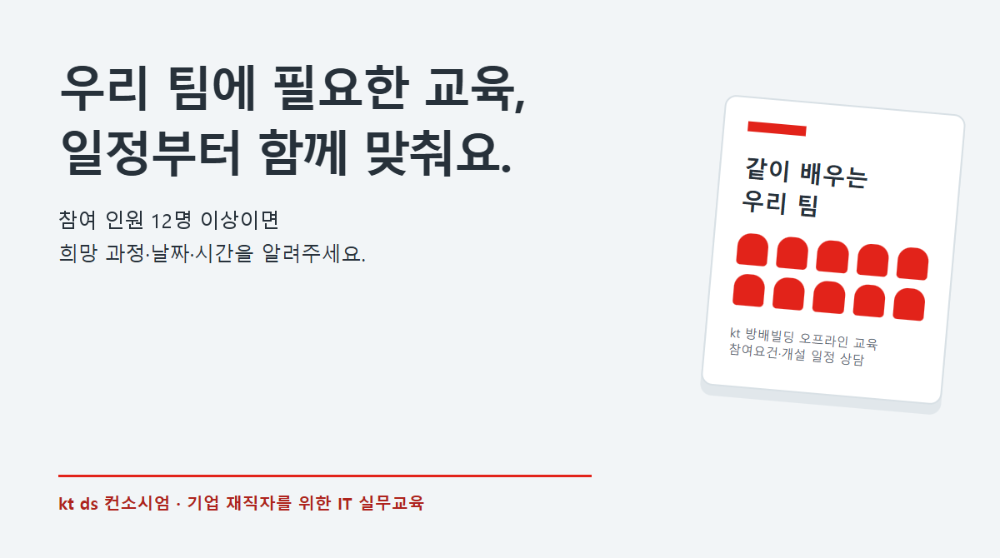

kt ds 협력사·협약기업 교육담당자님께
우리 회사의 다음 역량,
kt ds와 함께 준비하세요.
컨소시엄이 처음이셔도 괜찮습니다.
협약 확인부터 과정 선택, 일정 상담, 교육 참여까지
차근차근 안내해 드립니다.

처음 참여하시는 기업을 위한 안내
컨소시엄 교육은
우리 회사 직원의 실무 역량을
함께 키우는 교육입니다.
kt ds 국가인적자원개발컨소시엄은 협약기업 재직자의 직무 역량 향상을 지원하는 교육사업입니다. 기업이 자체적으로 모든 교육을 준비하지 않아도, kt ds의 교육장과 실습 환경을 활용해 IT 실무교육에 참여할 수 있습니다.
개발, AI·업무 자동화, 클라우드·인프라, 데이터베이스, 보안·품질 등 직원의 업무와 수준에 맞는 과정을 살펴보세요.
직무에 맞는 실무교육
교육 대상과 커리큘럼을 확인하고 직원에게 필요한 과정을 선택하세요.
참여요건 확인부터 지원
협약 여부와 고용보험 가입 등 사업 참여요건을 확인해 교육비 지원 여부를 안내합니다.
기업 일정에 맞춘 상담
10명 이상 참여를 계획하신다면 희망 날짜와 시간대로 개설을 상담해 보세요.
우리 팀을 위한 교육
10명 이상이라면,
희망 날짜와 시간을 알려주세요.
참여요건을 충족하는 재직자 10명 이상이 모이면
kt 방배빌딩에서 진행할 교육과 일정을 함께 협의합니다.
희망 일정 2~3개를 보내주시면 강사·강의실과 과정 운영 가능 여부를 확인해 안내드립니다. 과거 과정은 현재 개설 가능 여부부터 확인합니다.
이 내용만 회신해 주세요
- 회사명 · 담당자 연락처
- 관심 과정 · 참여 직무와 수준
- 예상 인원 · 희망 날짜와 시간대
메일 앱이 열리지 않으면
hongeun.lee@kt.com으로 보내주세요.
우리 팀에 맞는 과정을 찾아보세요.
2024~2026년 사업계획서와 교육 안내를 바탕으로 정리한 과정입니다.
과정명을 누르면 교육 대상·학습 내용과 일정 상담 방법을 확인할 수 있습니다.
표시가 없는 과정은 2026년 사업계획·수시과정·교육포털에 수록된 과정이며, 현재 모집 여부는 교육포털에서 확인할 수 있습니다. ‘이전 과정’은 재개설 상담 대상이며 현재 모집 중이라는 뜻은 아닙니다. 과거 원격 운영 과정도 이번 오프라인 개설 가능 여부를 별도로 확인합니다.
61개 과정
AI·업무 자동화
개발·협업
클라우드·인프라
데이터·데이터베이스
보안·품질
검색 결과가 없습니다. 다른 키워드나 ‘전체’ 분야를 선택해 보세요.
처음 참여하는 순서
회사 확인
회사명과 담당자 연락처를 보내주세요. 협약 여부와 참여요건을 확인합니다.
과정·일정 상담
관심 과정, 직무·수준, 예상 인원, 희망 날짜와 시간을 알려주세요.
개인별 수강 신청
확정 안내에 따라 교육포털에 개인별 회원가입 후 해당 과정·회차를 신청합니다.
입과 준비·교육 참여
개강 안내를 확인하고 고용24 본인인증·출결 앱 준비 후 교육장으로 오세요.
10명은 기업 맞춤 일정 상담 기준입니다. 개인이 이미 모집 중인 공개 과정에 신청할 때 회사에서 반드시 10명을 모아야 한다는 뜻은 아닙니다.
어디서, 어떻게 배우나요?
kt 방배빌딩에서 오프라인으로
- 서울특별시 서초구 효령로 176
- 1층 K플라자가 있는 신관 건물, 2층 교육장
- 강의장 데스크탑 PC 사용 가능
- 개인 노트북 지참도 가능
- 별도 주차 지원은 제공되지 않습니다.
출결은 미리 준비하면 편해요
- 고용24 회원가입 및 본인인증
- 고용24 직업훈련 출결관리 앱 설치·기기등록
- 교육장에서 입실·퇴실 모두 기록
- 총 교육시간의 80% 이상 출석 시 수료
- 첫날은 시작 10분 전 도착 권장
교육포털은 수강 신청용, 고용24 출결 앱은 출석 기록용입니다. 처음이시면 운영 담당자가 준비 절차를 안내해 드립니다.
처음이라 궁금하실 내용
교육비는 어떻게 되나요?
사업 참여요건을 충족하는 협약기업 재직자를 대상으로 국비지원 무료교육을 운영합니다. 회사와 참여자의 지원 가능 여부·적용 조건은 상담 시 확인해 드립니다.
컨소시엄 협약이 되어 있는지 모르겠어요.
먼저 협약기업 조회에서 회사명을 검색해 보세요. 조회되지 않으면 회사명과 교육담당자 연락처만 먼저 hongeun.lee@kt.com으로 보내주세요. 협약 여부를 확인하고, 미협약 기업에는 필요한 절차를 안내합니다.
10명이 안 되면 교육을 못 듣나요?
아닙니다. 10명 이상은 기업의 희망 일정에 맞춘 교육 상담 기준입니다. 기존 모집 과정은 참여요건 확인 후 개인별로 신청할 수 있습니다.
원하는 날짜에 바로 개강할 수 있나요?
희망 날짜와 시간대를 보내주시면 강사·강의실·참여요건을 확인해 일정을 협의합니다. 상담 요청만으로 개강이 확정되는 것은 아니며 확정 일정을 별도로 안내드립니다.
우리 팀을 위한 교육
10명 이상이라면,
희망 날짜와 시간을 알려주세요.
참여요건을 충족하는 재직자 10명 이상이 모이면
kt 방배빌딩에서 진행할 교육과 일정을 함께 협의합니다.
희망 일정 2~3개를 보내주시면 강사·강의실과 과정 운영 가능 여부를 확인해 안내드립니다. 과거 과정은 현재 개설 가능 여부부터 확인합니다.
이 내용만 회신해 주세요
- 회사명 · 담당자 연락처
- 관심 과정 · 참여 직무와 수준
- 예상 인원 · 희망 날짜와 시간대
메일 앱이 열리지 않으면
hongeun.lee@kt.com으로 보내주세요.